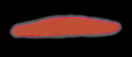
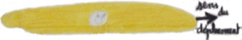
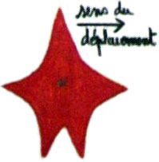
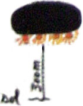

- Ven 01
- 18:50
- A Eragny (Val d'Oise), Mme B., une mère de famille
rentrant de son travail voit depuis le train, au dessus du Val d’Argenteuil, une forme allongée
d’un
orange extrêmement lumineux
, Les bords éclairés étaient nets
Deforge, G. > Gazette
du Val d'Oise, 16 Juillet 1997.
- Le mari de Mme B., parent d'élève de l'école, dans son jardin éloigné de la route entend
un
bruit violent et allant en s’amplifiant qui venait dans
(son) dos.
Il ajoutera : J’ai
eu un court instant peur que quelque chose vienne me percuter dans le dos.
Ce bruit, il ressemblait
à un énorme grincement de frein mélangé à une sorte de hurlement
Deforge, G. > Gazette
du Val d'Oise, 16 Juillet 1997.
- 19:50 A Conflans-Sainte-Honorine (Val
d'Oise), Mme B. aperçoit à nouveau un objet semblable à celui de 18:50. Lorsqu'on évoque la possibilité d'un avion elle répond qu'
aucun avion n’aurait
paru aussi gros et n’aurait pu avoir une surface éclairée aussi grande
- Sam 02
- 07:55 A Eragny (Val d'Oise),
observation d'un cigare allongé avec une petite lumière latérale :
Ca avançait, ça s’arrêtait. A l’arrêt,
la lumière blanche au centre diminuait, puis augmentait comme des battements de cœur (elle était toujours
visible)
Laurent
L., 11 ans, CM2 > Deforge, G. > Gazette
du Val d'Oise, 16 Juillet 1997.
- 08:10
- A Eragny (Val d'Oise), Joanna B. (10 ans), CM2,
observe un objet en étoile à 3 branches et 2 pieds Joanna
B. , 10 ans, CM2 > Deforge, G. > Gazette
du Val d'Oise, 16 Juillet 1997.
- A Eragny (Val d'Oise), observation à 100 m d'une masse noire immobile avec des phares braqués vers le sol
Au dessus de l’Oise,
l’ayant vu rue Cl. Bénard… 4 grosses lumières oranges clignotantes, l’ensemble était
gris, il avançait, et il s’arrêtait (300 m du sol)
Monsieur T., parent
d'élève > Deforge, G. > Gazette
du Val d'Oise, 16 Juillet 1997
- 08:15 A Eragny (Val d'Oise), observation d'une grosse
masse ovale Gazette
du Val d'Oise, 16 Juillet 1997.
- Lancement depuis le CEL d'une fusée SSBS S3 V7
produisant plusieurs signalements.
- A partir de 17:15 Depuis différents endroits de France, observation du déplacement
d'une boule lumineuse puis d'une lumière particulière dans le ciel, variant en fonction du lieu où les
observations ont été faites. A cette date, un incident sur une fusée militaire lancée depuis le centre d'essais
de Biscarosse a été relaté dans la presse. Cette dernière partant en "vrille" au lancement, a été interceptée et
a explosé en vol à 10 000 m d'altitude, ce qui explique la parfaite vision de cet évènement sur une partie de
l'hexagone. Tous ces témoins ont probablement observé cet évènement dans le ciel GEPAN : PAN classé B.
- Lun 04 Pionner Venus 1 est la première à se satelliser autour de Vénus.
- Mer 06 A Gênes (Italie), 1er enlèvement d'un gardien par de grands hommes
verts à bord d'un engin triangulaire "Les grands hommes verts...", Var Matin République, 13 janvier 1979.
- 08 Suite aux effort du lobbying ovni mené par Eric Gairy, l'ONU finit par adopter une résolution (en fait une déclaration de principe) où elle
s'engage à se tenir informée du dossier ovni et dans laquelle elle engage les états membres à
coordonner, à
l'échelon national, la recherche scientifique et les enquêtes portant sur la vie extraterrestre, y compris les
objets volants non indentifiés, et à informer le Secrétaire Général des cas observés, de la recherche et de
l'évaluation de ces activités.
- 09 Pionner Venus 2 largue une sonde vers Vénus.
- 11
- 05:00 Un habitant de Saint-Martin-en-Bière (Seine-et-Marne) voit dans le ciel un objet blanc brillant,
évoluant à basse altitude au-dessus de la Plaine de Champfray La République de Seine et Marne, 18 décembre 1978 < LDLN n° 182, février 1979, p. 34. La revue L'Invisible spécial OVNI, n° 11, pp. 26-27, fait allusion aussi vers la mi-décembre 1978, d'une personne honorablement connue qui a fait déposition à la gendarmerie de Ponthierry, de l'apparition dans le ciel de la forêt de Fontainebleau, d'un engin en forme de "ballon de rugby" de 25 m de longueur..
- Depuis plusieurs départements français, plusieurs personnes observent un phénomène lumineux se déplaçant à
vive allure dans le ciel sans qu'aucun bruit ne soit entendu. Une traînée est également aperçue Ce phénomène a disparaît subitement. Ces personnes ont probablement observé une rentrée atmosphérique GEPAN : PAN classé B.
- Mar 19 Une grande partie de la France se retrouve sans électricité suite à la
défaillance d'un câble électrique à très haute tension reliant Nancy à Troyes, qui entraîne la chute en cascade de
l'ensemble du réseau reliant Paris à l'est du pays.
- Jeu 21
- Au petit matin, l'équipage d'un avion-cargo Safe Air Argosy allant de Blenheim (Sud de Wellington, South Island)
à Dunedin/Christchurch
(Nouvelle Zélande) est invité à se détourner pour essayer de repérer des engins très inhabituels suivis
par le radar de l'aéroport de Welligton. Selon John Cordy, un contrôleur aérien, cela ne ressemble à rien de
connu. Le commandant (capitaine ?) Vern Powell et le capitaine John Randall dirigent donc leur Argosy vers la
zone et voient alors une étrange lumière qui suit l'avion pendant 19 km le long de la côte, avant de
disparaître. Les observations sont enregistrées par le radar de l'avion.
- Venera 12 largue une sonde vers Vénus.
- 25 Venera 11 largue une sonde vers Vénus.
- 27 A Gênes (Italie), 2nd enlèvement d'un gardien par de grands hommes
verts à bord d'un engin triangulaire "Les grands hommes verts...", Var Matin République, 13 janvier 1979.
- 31
- 23:46 Les observations des jours précédents (21 décembre et
autres), poussent une chaîne de télévision australienne à contacter un de ses reporters, Quentin Fogarty, et à lui demander d'enquêter sur
cette affaire. Celui-ci embarque alors sur le même vol dans la nuit.
- 00:10 Le capitaine et le copilote voient des lumières au large de la péninsule de
Kaikoura, que perçoit également le radar de Wellington, comme des spots intermittents.
- 00:22 Un autre contact radar-visuel a lieu et l'ovni est filmé.
- 01:00 Après d'autres brefs contacts, l'Argosy atterrit à Christchurch.
- 02:16 L'avion redécolle pour retourner à Blenheim. Comme l'engin arrive au-dessus
de la nébulosité, un ovni brillant se présente devant lui, sur la droite. Le radar de Christchurch repère un
immense
objet avec la même position, à environ 30 km de l'avion. Le film tourné à ce moment montre un objet ovale avec
des anneaux de lumière. Durant le vol, l'ovni s'approche à moins de 16 km de l'avion : l'un deux, un ovni
clignotant, est filmé tandis qu'il change de couleur, passant du jaune-blanc à l'orange-rouge terne.
- 03:10 L'avion se pose. D'autres témoins se manifesteront dans la région. Le film
générera un énorme intérêt médiatique, comme l'indique le communiqué suivant :
L'attention du monde entier
s'est tournée vers le ciel au-dessus de Kaikoura après qu'un film des observations ait été diffusé par les
télévisions américaine, britannique et australienne. Cela a déclenché un débat international sur les
explications possibles de la grande boule blanche lumineuse captée sur la pellicule. Le capitaine Verne
Powell, l'un des premier à voir l'ovni, dit qu'il a regardé, stupéfait, l'objet traverser 24 km de ciel en 5
s. Il a été agacé qu'on laisse entendre qu'il avait peut-être pris Vénus pour un ovni. Pilote depuis 1944, Powell a déclaré :
"Je sais encore reconnaître Vénus".